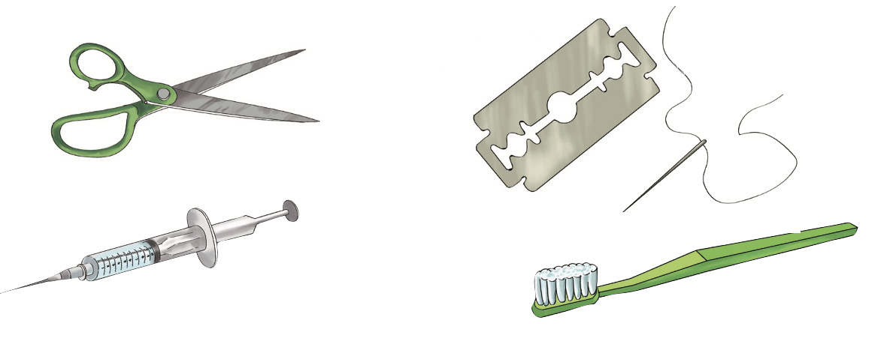
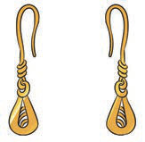
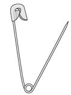

(b) Receiving blood from an infected person during blood transfusion.
Blood must be tested to make sure it is HIV-free before transfusion. Figure 5 shows/describes a patient receiving blood.

(c) From a mother to a child.
A baby can get HIV from an HIV-positive mother, especially during childbirth. A baby can also get HIV from the mother while breastfeeding.